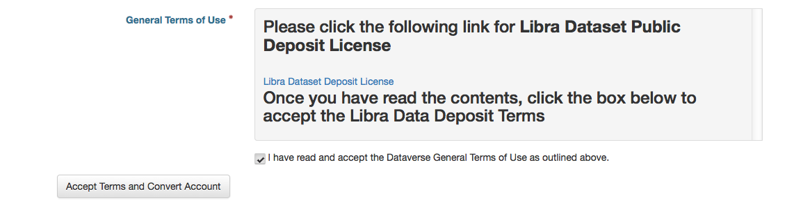

As a registered UVA user, you can:
Authenticated UVA users log in through NetBadge:
The first time you sign in to Libra Data, you must accept the Libra Data Deposit Terms. The University expects that you read the terms before confirming your agreement. You can see the terms here: http://www.library.virginia.edu/libra/datasets/public-dataset-license/. 
To access your account page, click on your name in the header on the right hand side.
The My Data section of your account page displays a listing of all the datasets, and files you have either created, uploaded or that you have access to edit. You are able to filter through all the datasets, and files listed there using the filter box or use the facets on the left side to only view a specific Publication Status or Role.
Notifications appear in the notifications tab on your account page and are also displayed as a number next to your account name.
You will receive a notification when:
Notifications will only be emailed one time even if you haven’t read the notification on the Dataverse site.